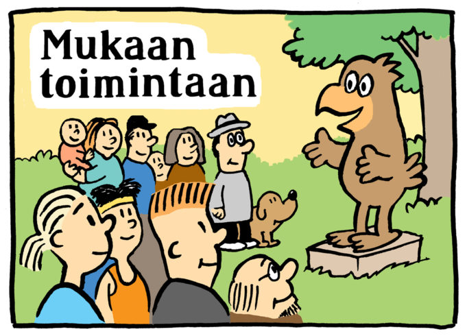

Osallisuus- ja vuorovaikutussuunnitelma
0.1

Esipuhe
Osallisuudella tarkoitetaan ihmisten kokemaa kuulumista yhteiskuntaan, yhteisöihin ja elämistä itselle sopimilla tavalla. Osallisuutta kokeva tulee kuulluksi ja edistää tärkeäksi kokemiaan asioita.Osallistumisoikeus yhteiskunnan ja oman ympäristönsä kehittämiseen määritellään perustuslaissa. Kuntalaisten osallisuuden edistäminen on osa demokratiaa. Kunta tarjoaa osallistumismahdollisuuksia, tukee omaehtoista toimintaa ja hyödyntää kehityksessä kuntalaisten ja yhteisöjen osaamista. (mukaillen: Kurikka P. 2014)
Tähän Kangasalan kaupungin osallisuus- ja vuorovaikutussuunnitelmaan on koottu Kangasalan kaupungin nykyisiä osallisuuden muotoja ja toimintatapoja sekä kuvattu mahdollisia uusia tapoja. Suunnitelman tarkoituksena on antaa vinkkejä osallisuuden eri muodoista ja kannustaa aktiiviseen osallisuuteen kaupungissa. Osallisuuden tulee kattaa kaupungin koko toiminta ja osallisuus on kirjattu myös kaupungin strategiaan 2.